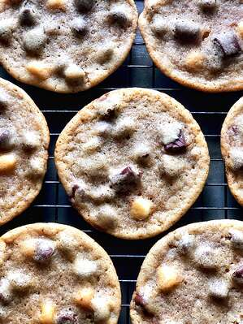

Cookie Recipe

This is a recipe on how to make a
chocolate chip cookie!
Ingredients
- ¾ cup brown sugar
- ½ cup unsalted butter, at room temperature
- ½ cup white sugar
- 1 teaspoon salt
- 1 large egg
- 1 teaspoon vanilla extract
- 1 ½ cups all-purpose flour
- ¾ teaspoon baking soda
- 1 cup milk chocolate chips
- 1 (3 ounce) bar dark chocolate, cut into chunks
- 3 tablespoons white chocolate chips
Steps:
- Combine brown sugar, butter, white sugar, and salt in a large bowl;
beat with
an electric mixer until a creamy, deep brown mixture forms.
Add egg and vanilla;
beat until mixture lightens and becomes smooth, 10 to 15 seconds.
- Mix flour and baking soda together in a separate bowl. Add slowly to the wet ingredients
until
mostly incorporated, but some white traces of flour remain. Fold in milk chocolate,
dark chocolate,
and white chocolate using a spatula, not the mixer. Cover the dough and
refrigerate for at least 30 minutes, or up to 48 hours.
- Preheat the oven to 350 degrees F (175 degrees C) when ready to bake.
- Divide cold dough into 2 1/4-ounce portions and place on a cookie sheet.
- Bake in the preheated oven until the edges start to look golden brown and crispy, 10 to 12 minutes.
Do not overbake; the centers
will not look fully done. Cool until cookies are set, about 30 minutes.